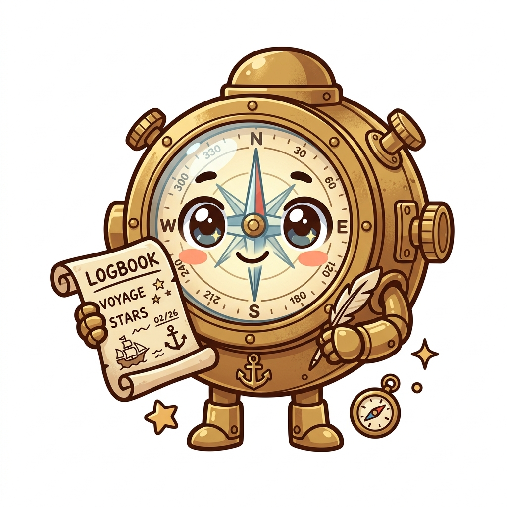

Sui Overflow · Track 3 · Walrus
Binnacle
A compliance vault for AI agents — built on Sui, Walrus and Seal.
Every autonomous system needs a black box.
The Problem
AI agents act. Nobody can prove what they did.
Agents call tools, move funds and sign things. But when an auditor or regulator asks "prove what your agent did — and prove nobody tampered with the log", there's no good answer today.
The log sits in a company database that the company itself can edit.
The Solution
A tamper-evident black box for every agent
Integrity
Every event is Merkle-batched and anchored on Sui. The log cannot be rewritten or reordered.
Confidentiality
Payloads are encrypted with Seal threshold encryption and stored on Walrus. Raw data never leaks.
Scoped access
An auditor decrypts only the exact days and event types they've been granted. Nothing more.
How it works
One pipeline, end to end
Agent→
Off-chain prover→
Seal-encrypt → Walrus→
Anchor batch hash on Sui
The auditor signs in with Google (Enoki zkLogin) and reads through our indexer. No seed phrases, no gas for the auditor.
Live Demo · 3 min
The auditor's journey
- 1 Sign in with Google — a real Sui address, no wallet
- 2 Open an engagement — an on-chain grant (scope · types · window)
- 3 Verify inclusion — recompute the Merkle proof against the anchored root
- 4 Decrypt — Seal releases a key share only if the chain agrees the grant covers this day & type
- 5 File attestation — the auditor's sign-off is anchored on-chain too
Future Vision
From audit to trust
- Real-time compliance — second-level batch flushing, so audit is continuous, not after-the-fact.
- Programmable policies — express regulation as Move policies: "EU auditors, financial events, this quarter only", enforced on-chain.
- From audit to insurance — once an agent's behaviour is provable, it becomes underwritable.
- A general primitive — any agent, any framework, can anchor to Binnacle.
Thank you
Binnacle
Because every autonomous system needs a black box.